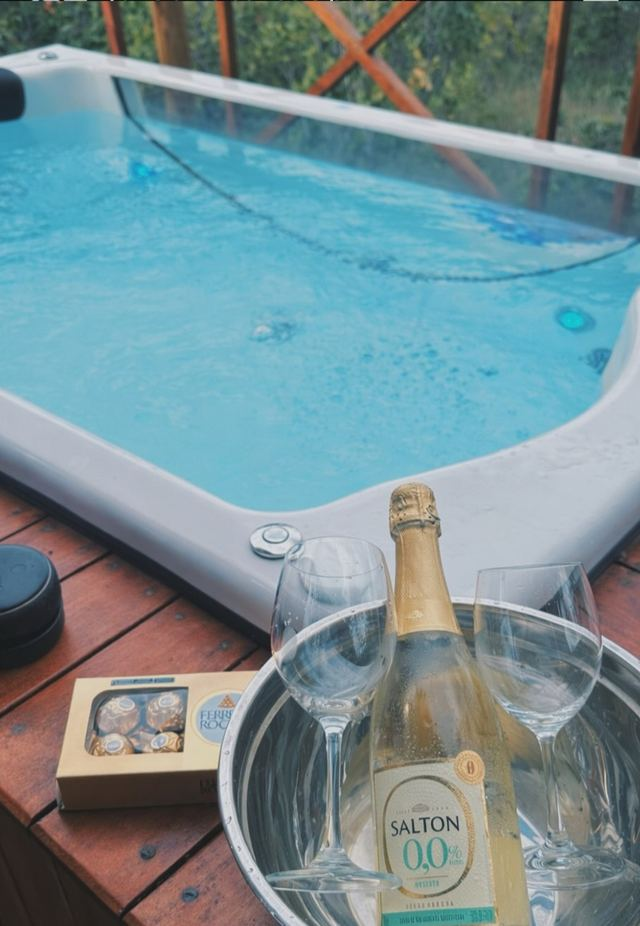
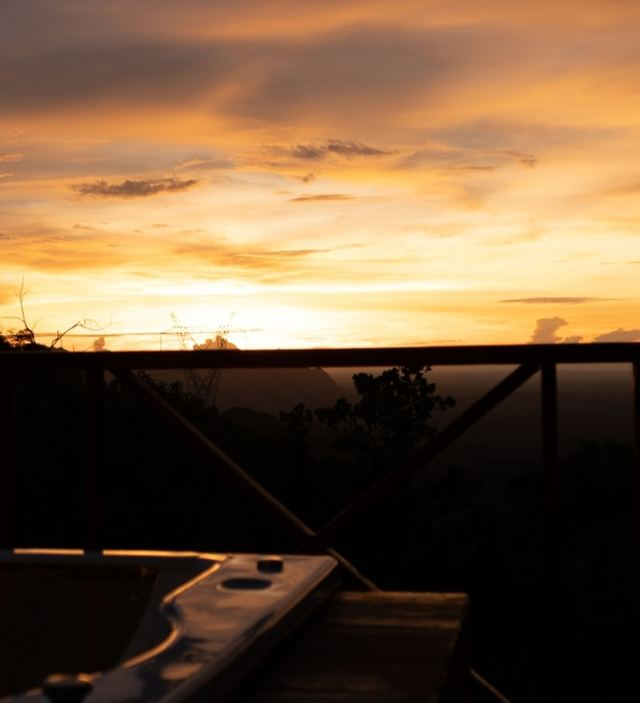
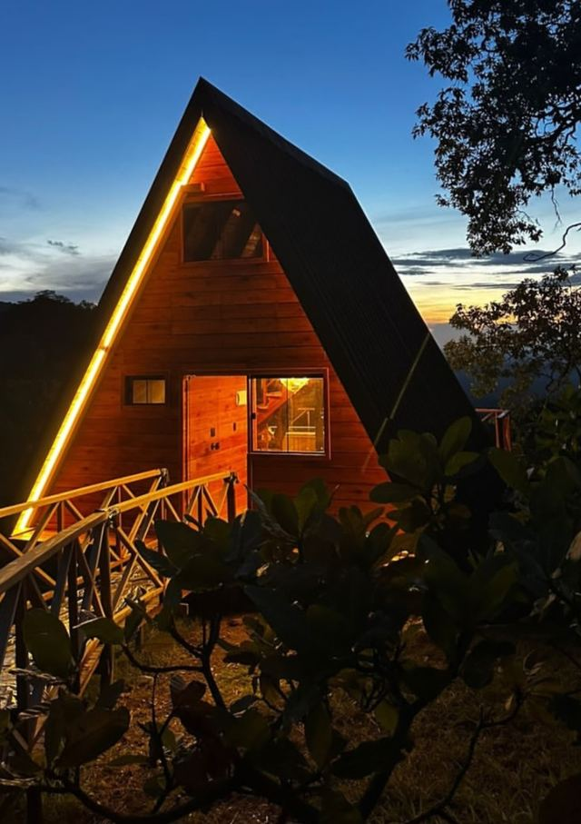

Tocar
Hidro a dois
Água quente no deck, com a serra à frente. Um jeito tranquilo de comemorar a dois.

Cavalcante · Chapada dos Veadeiros · GO
Chalé em A no meio do cerrado, com hidromassagem no deck, vista para a serra e as cachoeiras de Cavalcante ao redor.
A pousada
O Nature Senses Chapadinha fica na estrada entre Cavalcante e Colinas do Sul, no lado norte da Chapada dos Veadeiros. Aqui o dia começa com o canto dos pássaros e termina com a Via Láctea sobre o chalé.
Chalé privativo com hidromassagem e churrasqueira no deck, jardim, Wi‑Fi e estacionamento gratuitos. Perto do Território Kalunga e do Parque Nacional.

Avaliação5,0no Airbnb
Acomodação
Chalé em A com fachada de vidro, cercado de árvores do cerrado e de frente para a serra. Por dentro, sala com sofá e escada para o mezanino. Do lado de fora, o deck com hidromassagem.

Experiências
Nature Senses quer dizer isso: viver a natureza por inteiro, sem pressa.

Tocar
Água quente no deck, com a serra à frente. Um jeito tranquilo de comemorar a dois.

Ver
O fim de tarde pinta o céu de Cavalcante de laranja. As poltronas do deck são o melhor lugar para assistir.

Sentir
Longe das luzes da cidade, a Via Láctea aparece a olho nu nas noites limpas de maio a setembro.
Arredores
Cavalcante é a porta de entrada para as cachoeiras do Território Kalunga. Contrate guias locais: além de obrigatórios em vários atrativos, eles contam a história do lugar.
Alto Paraíso · São Jorge
Patrimônio Natural da Humanidade pela UNESCO. Cânions, os saltos do Rio Preto e trilhas pelo cerrado de altitude.
Território Kalunga · Engenho II
O poço azul-turquesa mais famoso da Chapada. Acesso com guia da comunidade e número limitado de visitantes por dia.
Território Kalunga · Engenho II
Queda alta e poço amplo para banho. Dá para combinar com Santa Bárbara no mesmo dia.
Cavalcante
Uma sequência de quedas e poços no meio da mata, para passar o dia de cachoeira em cachoeira.
São Jorge
Rochas esculpidas pelo Rio São Miguel, com crateras e piscinas naturais que lembram a superfície lunar.
Cavalcante · Teresina · Monte Alegre
O maior território quilombola do Brasil. Visitar com guias da comunidade é a melhor forma de conhecer sua história e cultura.
@naturesenseschapadinha
Como chegar
Dúvidas frequentes
Não encontrou o que procurava? Fale com a pousada pelo Instagram.
Na Estrada Cavalcante–Colinas do Sul, em Cavalcante (GO), no lado norte da Chapada dos Veadeiros. A localização exata é enviada na confirmação da reserva.
O trecho final é de estrada de terra. Carros mais altos ajudam, principalmente de outubro a abril, na época das chuvas. Na seca, a maioria dos carros passa com cuidado.
Sala com sofá, escada para o mezanino e deck com hidromassagem, poltronas e churrasqueira. Wi‑Fi e estacionamento privativo são gratuitos.
De maio a setembro (seca), o céu fica limpo, as trilhas secas e as noites estreladas. De outubro a abril (chuvas), as cachoeiras ficam mais cheias e o cerrado mais verde. Agosto e setembro são a época dos ipês.
Em vários atrativos do Território Kalunga, como Santa Bárbara e Capivara, sim: o acesso é feito com guias da comunidade. Vale reservar com antecedência na alta temporada.
Pelo formulário abaixo, que monta a mensagem com suas datas, ou direto pelo Instagram, Booking.com ou Airbnb.
Reservas
Escolha as datas e monte sua mensagem. Você envia direto para a pousada e recebe a resposta da equipe.